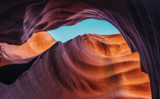
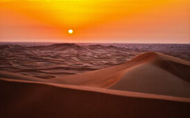

Back to portfolio
Beauty is seen through a lens
Perspective matters. All my photographs try to capture that perspective, however subtle.
- 


- 

-
- Date
- July 2019
-
- Location
- Morrocan Highlands
-
- Camera
- Canon EOS 1D
-
- Lens
- 70mm f2.8 @ 1/6"
Mineral carvings
Deep in the deserts of Morroco, lies a dried-up valley, featuring some of the most exquisite rock formations, carved millions of years ago.
To truly experience these beautiful formations, one has to visit them in person. I hope my photos have managed to capture the sheer size – gravitas even – and spellbinding nature of these eroded walls.
latest
Stay up-to-date with my updates
-
-